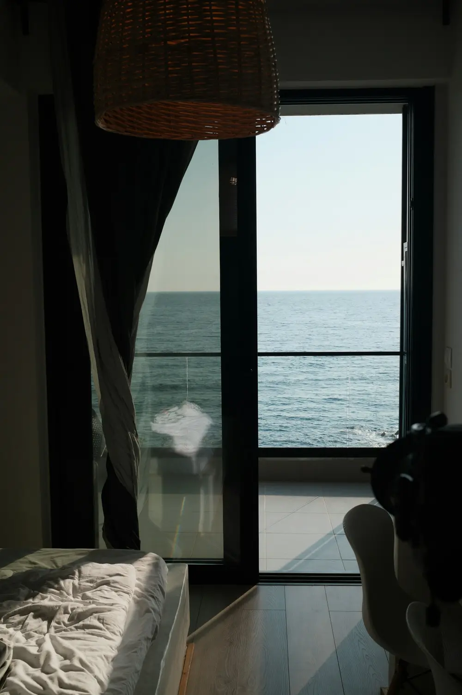
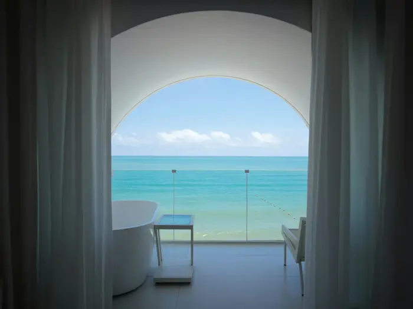
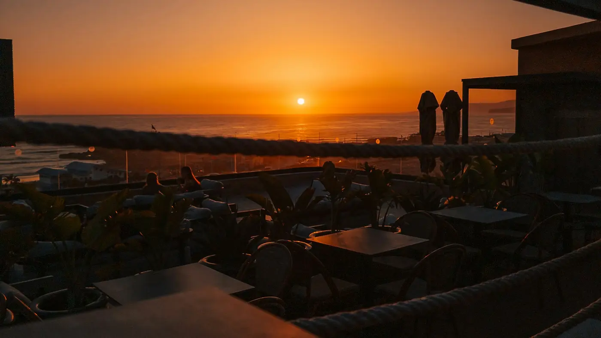

Aurea
Cabo Lumbre · Atlántico
Ver disponibilidad
Veintidós llaves sobre un cabo de basalto, frente al poniente.
Veintidós llaves sobre un cabo de basalto, frente al poniente.
La esquina donde el cabo gira hacia el oeste. El ventanal ocupa dos paredes y la bañera mira al mar.



El sol se pone delante de las veintidós habitaciones. Desde ese momento la terraza se queda en silencio.